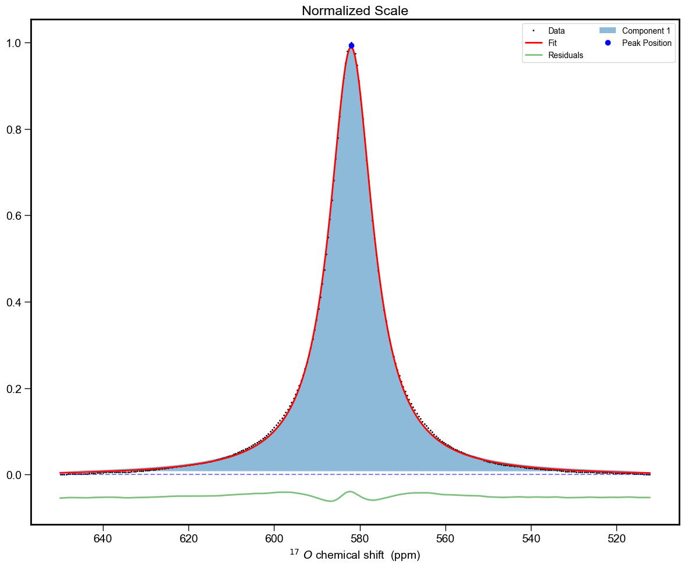

nmrlineshapeanalyser: ss-NMR peak shape deconvolution and line shape analysis made easy¶
nmrlineshapeanalyser is an open-source Python package designed to make peak deconvolution or line shape analysis in 1D NMR spectrum easier.
This package is compatible with Bruker's NMR data and spectrum data saved in a CSV files (see User's guide).
Why nmrlineshapeanalyser?¶
- it offers an easy and fast processing of either lineshape spectral analysis or peak deconvolution
- it requires the path to processed Bruker's data
data\single_peak\10\pdata\1 - for the optimisation, you only need to input the peak position(s) -- it does the rest
- it gives you the freedom to decide if you want to either optimise or fix the peak peak position(s) while other peak parameters are refined
- it provides you a detailed analysis of the optimised Pseudo-Voigt parameters that describe your peak(s) -- saved in a txt file
- for peak deconvolution, it calculates the percentage of each peaks
- it saves fit and data in a CSV file in case you decide to visualise in your preferred software
- it saves your fit as a publication-quality png file
Key Features¶
- Load and process Bruker NMR data
- Select and analyse specific spectral regions
- Perform peak fitting using Pseudo-Voigt profiles
- Calculate detailed peak metrics and statistics
- Generate publication-quality visuals
- Export results in various formats:
- txt: calculated peak metrics and statistics
- png: visualisation of the fitted spectral regions
- csv: save plots to a file
Install¶
Dependencies¶
The following packages are required:
You can install these dependencies using pip:
A Single Peak Fitting Example¶
from nmrlineshapeanalyser.core import NMRProcessor
#create NMRProcessor object
processor = NMRProcessor()
#Load filepath: always include the '\\'
filepath = r"..\data\single_peak\10\pdata\1\\"
# Load the data
processor.load_data(filepath)
#Select the region of interest
x_data, y_data = processor.select_region(512, 650)
#Normalize the data and return normalised y_axis and the corresponding x_axis
x_data, y_normalized = processor.normalize_data(x_data, y_data)
#define initial parameters for the fitting
#this example is for a single peak
#format of the parameters is [x0, amplitude, width, eta, offset]
# x0 (position), amplitude, width, eta (mixing parameter), offset
#x0 has to be close to the peak position
initial_params = [
581, 0.12, 40.51, 0.89, -143.115,
]
#Specify the number of peaks to be fitted
number_of_peaks = 1
# fixed_x0 controls whether peak positions should be fixed during fitting
# False means position can vary, True means position is fixed
fixed_x0 = [False] * number_of_peaks
# You can alternatively set it up as:
#fixed_x0 = [False]
#Where the number of False reflects the number of peaks you want to optimise
# i.e. [False, False] means you want to optimise two peak positions and so on
#FIt the data
popt, metrics, fitted = processor.fit_peaks(x_data, y_normalized, initial_params, fixed_x0)
#popt is the optimized parameters
#metrics is the metrics of the fitting
#fitted is the fitted curve data
#Plot and examine the results of the fitting
fig, axes, components = processor.plot_results(x_data, y_normalized, fitted, popt)
#Save the figure as a png file and the results as a csv file
processor.save_results(filepath, x_data, y_normalized, fitted, metrics, popt, components)

And a cell looking like:
Peak Fitting Results:
===================
Peak 1 (Position: 582.01 ± 0.01):
Amplitude: 0.993 ± 0.002
Width: 12.33 ± 0.03 in ppm
Width: 835.74 ± 2.36 in Hz
Eta: 1.00 ± 0.01
Offset: -0.004 ± 0.000
Gaussian Area: 0.00 ± 0.10
Lorentzian Area: 19.23 ± 0.16
Total Area: 19.23 ± 0.19
--------------------------------------------------
Peak 1 Percentage is 100.00% ± 1.39%
Overall Percentage is 100.00% ± 1.39%
Contact¶
For questions and support, please open an issue in the GitHub repository.